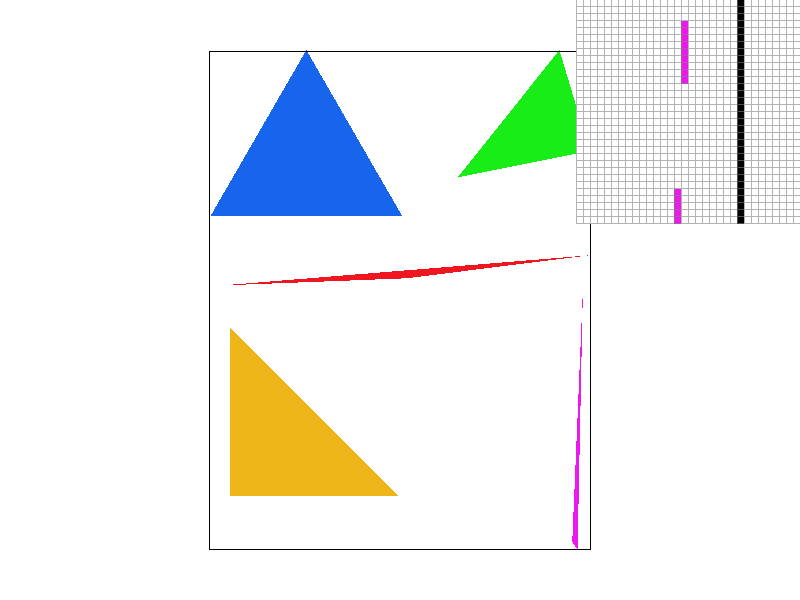
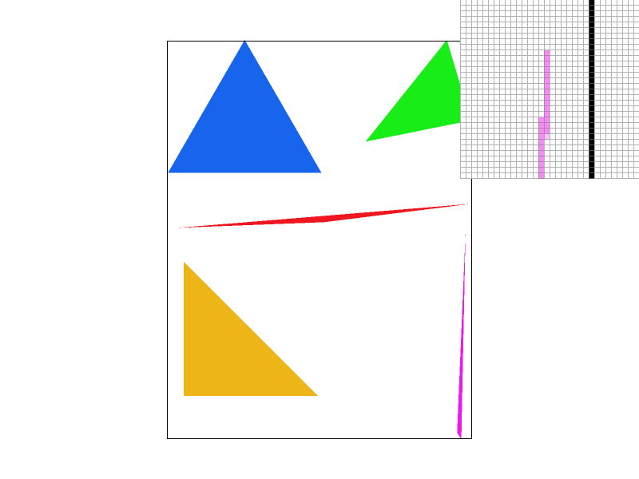
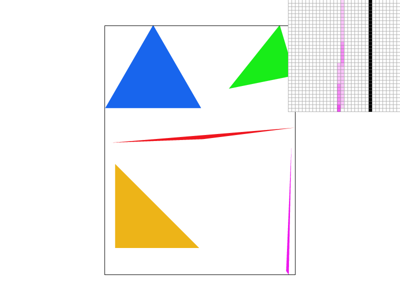
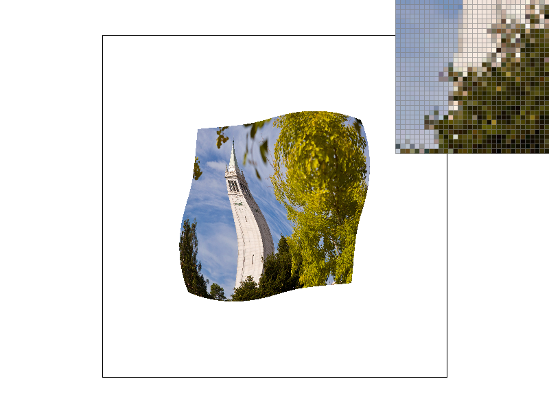
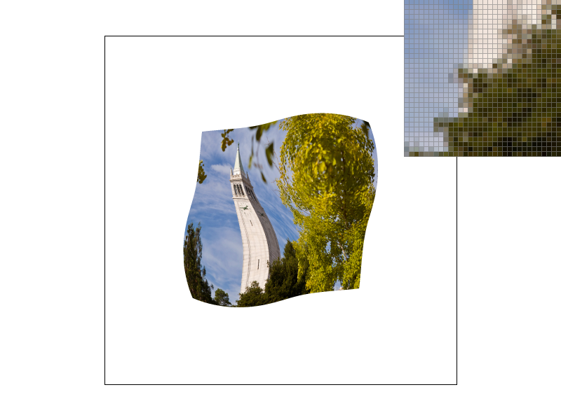
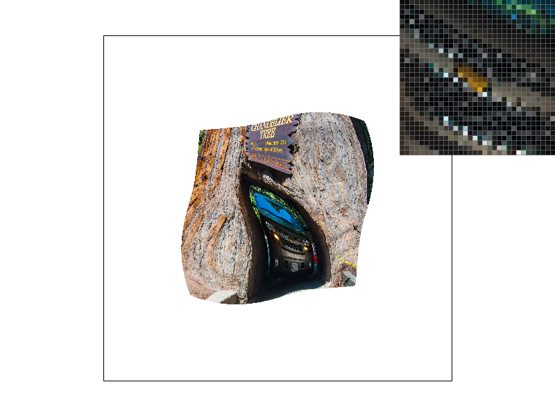

CS184/284A Spring 2025 Homework 1 Write-Up
Names: Siva Tanikonda
Link to webpage: cal-cs184-student.github.io/hw-webpages-siva-wp/hw1/index.html
Link to GitHub repository: github.com/cal-cs184-student/sp25-hw1-siva-tanikonda
Overview
Give a high-level overview of what you implemented in this homework. Think about what you've built as a whole. Share your thoughts on what interesting things you've learned from completing the homework.Task 1: Drawing Single-Color Triangles
- The first step to rasterize a triangle was to find the coordinates and bounds of the bounding box. This is done by getting the minimum and maximum \(x\)-values and \(y\)-values among all the triangle vertices. Then, I loop through every half-point within the bounding box. For each of these points \((i,j)\), I had to find which side of each triangle line the point was on. For each triangle line \([(x_0,y_0),(x_1,y_1)]\), I calculated \(L(x_0,x_1,x)=-(x-x_0)(y_1-y_0)+(y-y_0)(x_1-x_0)\). \(L=0\) means that the point is on the line, \(L<0\) means that the point is to the right of the line, and \(L>0\) means that the point is to the left of the line (we are assuming that this line is directed and infinite length). As long as all points are to the left, or all points are to the right (i.e. the side is the same for every point with respect to all three sides of the triangle), then we know that our point is within the triangle. You can assume that points exactly on a line are on either side of the line (i.e. assume that a point on a line cannot violate the requirement for the point to be in the triangle). The disregard for whether all points are to the left or all the points are to the right allows us to account for both clockwise and counter-clockwise orderings of the triangle vertices, and since points lying on the triangle sides will definitely be added, we handle points on edges properly. Then, for each sample point in the triangle, we light-up the pixel with the desired color.
- Since I am looping through only points within the bounding box in one-pixel increments, I only look at at most \(\mathcal{O}(n)\) points (where \(n\) is the number of pixels in the bounding box). Then, we perform simple multiplications/additions/subtractions to check if each point is within the triangle (which takes \(\mathcal{O}(1)\) time). This is no worse than performing constant-time operations on each pixel in the bounding box
- Here is a screenshot of
basic/test4.svgfrom my rendering: - Extra Credit: here are some things I ended-up changing/optimizing when trying to improve my naive triangle rasterization algorithm (the previous
basic/test4.svgimage was rendered with the optimized version, and the previous conceptual questions were answered based on the naive algorithm before the extra credit optimizations):- Reduced memory access: previously, I created two new functions:
calculate_landpoint_in_triangleto check the side of a line a point was on and check if a point was in a triangle, respectively. I consolidated these two functions so all the functionality is inpoint_in_triangle. - Reducing search space: On each iteration of the inner loop of the sampling, I made it so that once we find a point that is no longer in the triangle after a sequence of points that were in the triangle, the inner loop breaks. This means I can just move on to the next row of the triangle without checking later pixels on the current row of the triangle.
hardcore/01_degenerate_square1.svgwith my optimizations (timings are done withchrono::high_resolution_clock):Optimizations Runtime None ~75 milliseconds Memory Optimization ~37 milliseconds Search Space Optimization ~32 milliseconds Memory Optimization + Search Space Optimization ~20 milliseconds - Reduced memory access: previously, I created two new functions:
Task 2: Antialiasing by Supersampling
- Here are some implementation details/ideas to note:
- Usefulness: Supersampling is essentially a technique where instead of taking one sample per output pixel, we take multiple samples per output pixel. This is done by sampling multiple sub-points for each point in a triangle, and displaying the average color of these samples for each pixel in the output of the rendering. This prevents aliasing in the image (and aliasing decreases further as you take more samples per pixel). This is because supersampling's averaging effect prevents large differences in colors in adjacent output pixels (i.e. it makes the image look less pixelated), and it prevents artifacts such as jaggies and the Moire pattern by adding blur during the rendering process.
- Data Structures: The only data structure that was modified was the
sample_bufferarray. Now, when setting the sample rate (set_sample_rate()) or setting the frame buffer target (set_framebuffer_target()), I up-scaled the size of the sample buffer bysample_rate. This is essentially making sure that there is an square ofsqrt(sample_rate)*sqrt(sample_rate)"sub"-samples for each pixel (which I will later average for each individual pixel to get the final pixel colors). - Algorithm: There are three aspects of the algorithm that are important:
- Resolving to the framebuffer (
resolve_to_framebuffer()): Here, I essentially made it so for every output pixel \(i,j\) in the frame buffer, I make the color equal the average of every color in the square \(([i\sqrt{R}, (i + 1)\sqrt{R} - 1],[j\sqrt{R}, (j+1)\sqrt{R} - 1])\) in the sample buffer, where \(R\) is the sample rate. This ensures that each output pixel is the average of the corresponding \(R\) supersamples. - Triangle rasterization (
rasterize_triangle()): I managed to essentially reuse all of the code from Task 1 by first up-scaling all of the triangle coordinates by \(\sqrt{R}\) before performing my loop. Then, inrasterize_point(), I clamped each point to a larger range (specifically, the width and height of the window both multiplied by \(\sqrt{R}\) to account for the larger sample buffer). Then, I changed the way I indexed into the sample buffer infill_pixel()as follows to account for the larger sample buffer and up-scaled coordinates: \[\text{sample_buffer}[y\cdot\text{width}\cdot\sqrt{R}+x]\] - Preventing supersampling on lines and points: To avoid having supersampling affecting the rasterization of points and lines, I added an optional boolean parameter to both
fill_pixel()andrasterize_point()calledsupersampling=false. Iftrue, thenrasterize_point()andfill_pixel()behave as necessary for triangle supersampling to work. But, if the value isfalse, thenrasterize_point()has its standard behavior in the skeleton code (i.e. it treats the points as being un-scaled), butfill_pixel()now fills every sample in the square \(([x\sqrt{R}, (x + 1)\sqrt{R} - 1],[y\sqrt{R}, (y+1)\sqrt{R} - 1])\) with the colorcto prevent supersampling from blurring the sampled colors for lines and individual points.
- Resolving to the framebuffer (
- The screenshots of the supersampling with different sample rates are below. The reason for the improvement in the clarity of thin parts of the image (such as corners) is that even if one of our samples is slightly off the edge of a triangle, the pixel that the sample represents will still not be white, because some other samples corresponding to the same pixel are non-white/in the triangle (thus leading to the average color not being white). This allows for more clarity/antialiasing on the corners of the triangle without issues such as breaks in the corner of the triangle due to unlucky sample positions with a low sample rate. In addition, sharp changes in color are more smooth due to the averaging effect.

sample_rate=1 |

sample_rate=4 |
sample_rate=9 |

sample_rate=16 |
Task 3: Transforms
- A screenshot of the robot is below. I rotated and translated some of the robot's body parts in the SVG file to make it look like he is trying to balance on one leg (this was done by adding
gtags in the SVG file).
sample_rate=16 with default settings.Task 4: Barycentric coordinates
- The way I implemented barycentric interpolation was taking the ratios of the \(L\)-value calculations of Task 1, and using these ratios to weight the effect of each triangle corner color on every sample point in the triangle. Since the \(L\)-values represent how to the "left" or to the "right" a point is to a side of the triangle, for each vertex \(v_i\) on the triangle and a sample point \(v\), we calculate \(\frac{L(v_j,v_k,v)}{L(v_j,v_k,v_i)}\), where \(v_j\) and \(v_k\) are the other vertices (in either clockwise or counter-clockwise order). Therefore, the higher this ratio, the more "proportionally close" that the sample point \(v\) is to \(v_i\). I then define three constants: \[\alpha=\frac{L(v_1,v_2,v)}{L(v_1,v_2,v_0)},\beta=\frac{L(v_2,v_0,v)}{L(v_2,v_0,v_1)},\gamma=1-\alpha-\beta\] Then, I define the color of the sample at \(v\) to be the weighted average of the colors of the three triangle vertices as follows:\[\alpha\cdot C_0+\beta\cdot C_1+\gamma\cdot C_2\]Here is an example of a color gradient on a triangle based on the Barycentric coordinate scheme outlined (where there is a red, blue, and green vertex in the triangle):
- Here is a screenshot of my color wheel:
sample_rate=16).
sample_rate=1 with default settings.Task 5: "Pixel sampling" for texture mapping
- To implement pixel sampling, I first calculated the barycentric coordinates for each point that is inside the triangle \((x_0,y_0),(x_1,y_1),(x_2,y_2)\) (i.e. the \(\alpha\), \(]beta\), and \(\gamma\) values). Then, I calculated the "transformation" of this barycentric coordinate into the triangle \((u_0,v_0),(u_1,v_1),(u_2,v_2)\) by calculating \(\alpha\cdot(u_0,v_0)+\beta\cdot(u_1,v_1)+\gamma\cdot(u_2,v_2)\) and up-scaling the \(x\) and \(y\)-coordinates by the width and height of the texture, respectively. This tells us which point on the texture to sample to get the corresponding color value in our final rasterized triangle. After limiting the coordinates to the size of the texture, I got the color in the following way for reach case:
- Nearest-Neighbor: I just took the floor of the coordinates (rounded the \(x\) and \(y\) input coordinates down) and returned whatever color this was on the texture.
- Bilinear: I rounded the coordinates to the nearest integer coordinates and took the color values of the \(2\times 2\) square with the bottom right square being the rounded coordinate square. Then, I "lerp"-ed the true unrounded coordinate horizontally for the top two and bottom two squares separately, and then I finally lerped the resulting colors vertically to get the final color. To perform a "lerp", I calculate the following:\[\text{lerp}(A,B,p)=A_\text{color}+\frac{p}{B_\text{coordinate}-A_\text{coordinate}}(B_\text{color}-A_\text{color})\]where \(p\) and the coordinates are either \(x\) or \(y\)-coordinates.
- I found
texmap/test6.svgto show a strong difference. The screenshots are below. - It appears that bilinear filtering performs better and the image looks significantly smoother (particularly with low sample rates) on the above images. Bilinear filtering will likely be the most advantageous when fine details in a texture have to be shown without aliasing/stark differences in colors in adjacent pixels representing the same object. With nearest-neighbor, you often do not get much of a blending of colors when rasterizing, because every sample must strictly be the exact color of the nearest pixel, and can not be the "average" of multiple pixels (assuming supersampling isn't involved yet). This leads to aliasing, such as with how there are very dark pixels right next to very light pixels in the tree on the top left image. But, with bilinear filtering, even at low sample rates, we get a lot of clarity with the leaves, because we are taking a weighted average of the color of four pixels instead of just one (preventing adjacent pixels in the letters being starkly different colors and thus reducing aliasing). But, with high sample rates, bilinear filtering and nearest-neighbor filtering look more similar, as the supersampling blends the output colors regardless of the underlying texture sampling method.

sample_rate=1) |

sample_rate=16) |
sample_rate=1) |
sample_rate=16) |
Task 6: "Level Sampling" with mipmaps for texture mapping
- In general, level sampling is an approximation of supersampling for texture mapping. More specifically, level sampling takes advantage of the fact that the mapping from a triangle on the screen to a triangle on a texture will non necessarily be one-for-one in size. Therefore, we can look at a "smaller resolution" of the texture when picking the color to return from the texture sample. First, before sampling a pixel from a texture, I created barycentric interpolations of \((x+1,y)\) and \((x,y+1)\) along with the interpolation of \((x,y)\) (we will call the transformation \((u,v)=f(x,y)\)). For calculating the level of a coordinate \((u,v)\), I approximated \(\left(\frac{du}{dx},\frac{dv}{dx}\right)\approx f(x+1,y)-f(x,y)\) and \(\left(\frac{du}{dy},\frac{dv}{dy}\right)\approx f(x,y+1)-f(x,y)\). Then, I up-scaled each \(u\)-component and \(v\)-component of the derivatives/interpolated points by the width and height of the texture, respectively. The level is then determined by:
\[L=\log_2\left(\max\left(\sqrt{\left(\frac{du}{dx}\right)^2+\left(\frac{dv}{dx}\right)^2},\sqrt{\left(\frac{du}{dy}\right)^2+\left(\frac{dv}{dy}\right)^2}\right)\right)\]
Now, there are two cases to consider:
- Level-0 sampling: Nothing changes from Task 5 (I just run the respective pixel sampling function with
level=0). - Nearest Neighbor: I took \(\lfloor L\rfloor\) (and clamped it into the range of the number of layers I have), and passed this as my level to the chosen pixel sampling function.
- Linear Sampling: I performed pixel sampling on both the level \(l:=\text{round}(L)-1\) and \(u:=\text{round}(L)\). Then, I labeled the color samples \(C_l\) and \(C_u\). Then, the returned color is the lerped version of the color: \[C=C_l+\frac{L-l}{u-l+1}\left(C_u-C_l\right)\] Note that the reason for adding \(1\) to the denominator is to account for the fact that the range is geometrically \(2\) units wide, not simply the difference of the starting and ending index.
- Level-0 sampling: Nothing changes from Task 5 (I just run the respective pixel sampling function with
- Here are the three measurement comparisons:
- Speed: Taking multiple samples for a pixel takes the most time, since you will need to take multiple samples for every pixel that you are trying to render. The next slowest is level sampling, which requires you to perform an extra calculation for each pixel to calculate which level the pixel is at in the texture. Finally, the fastest is pixel sampling, as we are just sampling one pixel for each input pixel when texture sampling.
- Memory: Taking multiple samples for a pixel will take the most memory (when texture sampling with \(k\) samples per pixel with \(n\) total pixels, we need \(\mathcal{O}(nk)\) time). Then, the next lower memory usage is for level sampling, which requires us to store some extra lower resolution textures (but since each texture is \(\frac{1}{4}\) the size of the previous texture, we actually don't use much extra space!). Finally, the most memory efficient is pixel sampling, because we are simply sampling once per each pixel, which doesn't require memory usage beyond just storing the final pixel values.
- Antialiasing: Pixel sampling is the worst, because we end-up getting aliasing from each pixel just being the color of the nearest neighbor in the texture (this leads to jaggies, Moire patterns, etc.). Level sampling is significantly better, as for pixels that represent larger portions of the texture, the level sampling gives us an average of the color values of multiple pixels in the texture, leading to more blurring and less aliasing. The best is taking multiple samples per pixel, as every single pixel is now the average of multiple close samples in the texture, meaning that there is more accurate and effective blurring compared to level sampling and pixel sampling.
-
Below are screenshots I took of a PNG I found on the internet. We can observe that not using level sampling gives us more detail, but with a lot of aliasing. But, using level sampling avoids the aliasing while sacrificing detail (which shows how level sampling is somewhat of an intermediate between supersampling and basic pixel sampling). All of the below images are generated with
sample_rate=1. L_ZERO,P_NEARESTL_ZERO,P_LINEARL_NEAREST,P_NEARESTL_NEAREST,P_LINEAR